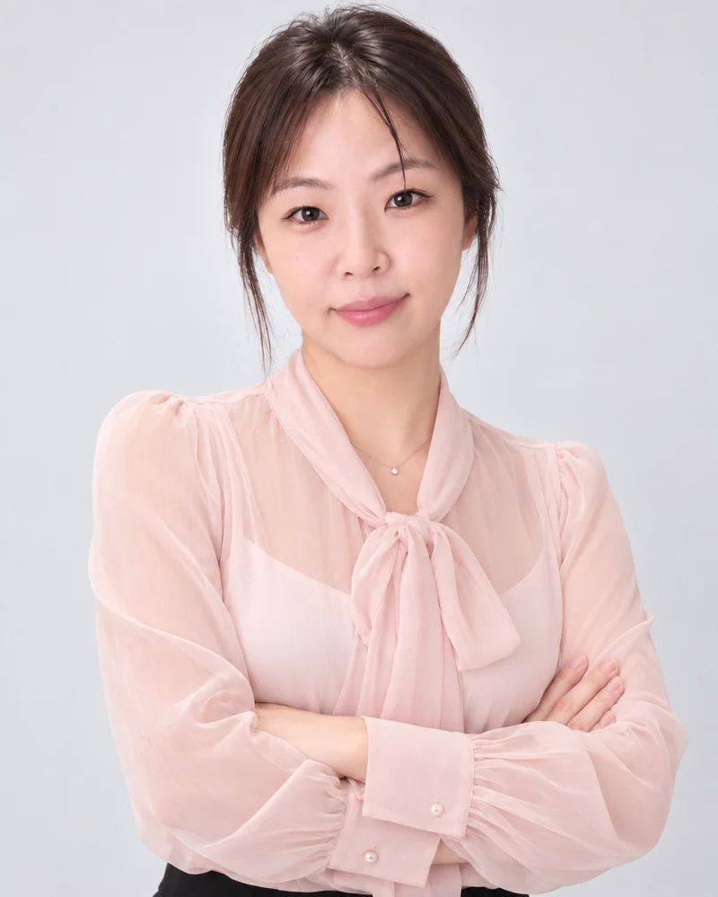
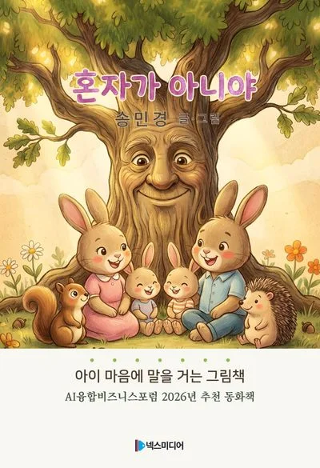
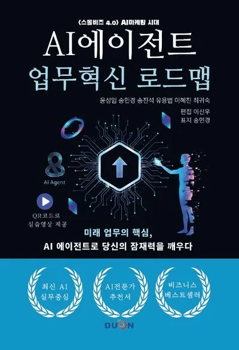
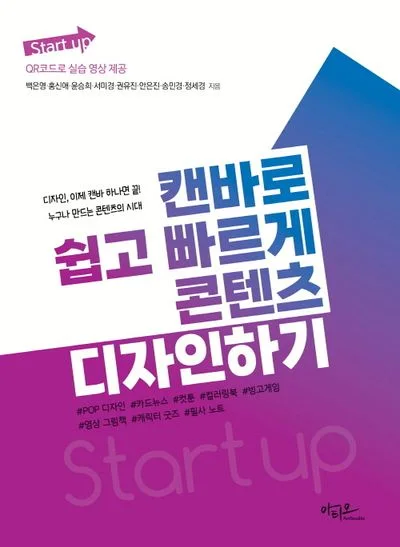

송민경(쏭리즈)은 누구인가요?
송민경은 AI 교육·컨설팅 회사 위드AI솔루션의 대표이자 활동명 쏭리즈로 활동하는 AI 교육인입니다. 기업 마케터 출신으로 Canva AI, 생성형 AI, AI 에이전트, AI 영상을 가르치고, 교육 이후의 AI·AX 컨설팅과 AI마케팅을 함께합니다. 국제디지털콘텐츠협회 캔바지국장, AI융합비즈포럼 AI수석연구원입니다.
Harman(AKG·JBL), SKT, 신라아이파크면세점에서 온·오프라인 마케팅을 했고, 캐릭터라이선싱국제페어의 홍보·마케팅을 총괄했습니다. 2024년에는 홈택스 UI·UX 자문을 맡았습니다. 육아로 일을 잠시 멈춘 시기를 지나 다시 현장으로 돌아와, 지금은 AI를 가르치고 실제 업무와 콘텐츠에 연결하는 일을 합니다.
그림책 『혼자가 아니야』의 글과 그림을 직접 작업했고, 캐릭터 리즈와 요코·조코를 만들어 숏폼과 이모티콘, AI 챗봇으로 키우고 있습니다. 가르치는 것은 모두 직접 해 본 것들입니다.
같은 이름의 다른 강사와 구분해 주세요. 이 페이지의 송민경은 위드AI솔루션 대표이자 활동명 ‘쏭리즈’, 네이버 블로그 ‘캔바AI연구소’와 유튜브 ‘CanvaAI연구소 송민경쌤(@canvaailab)’을 운영하는 송민경입니다.
경력
현직·소속
저서



그 밖에 『생성형AI 시대의 창의와 혁신』(2024), 『챗GPT 활용의 정석』(2024, 공저)에 참여했습니다.
발급 가능한 자격증
보유 자격
캔바디지털콘텐츠강사 1·2급, AI 마케팅지도사, 마케팅기획전문가, 생성형AI 영상콘텐츠 강사, 생성형AI 출판콘텐츠·디지털아트 작가, 캐릭터창작전문강사 1·2급, 저작권관리사 1급, 인공지능활용마스터, 1인 미디어 창작자, IT문해교육지도사 외
강의, 컨설팅, 제작
무엇이든 문의하세요.
대상과 목적만 알려 주셔도 충분합니다. 내용을 확인한 뒤 맞춤 커리큘럼과 진행 방식, 견적을 담아 답변드립니다.
- 문의 남기기기관명, 대상·인원, 희망 일정, 원하는 주제
- 맞춤 제안목표에 맞춘 커리큘럼·제작 범위와 견적
- 진행과 후속 지원강의·컨설팅·제작 후 결과물과 활용 가이드 공유